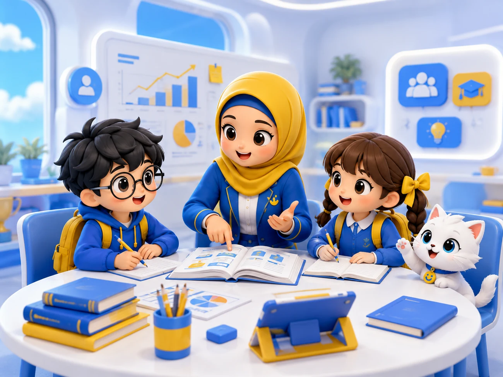

Assessment kemampuan awal
Memetakan target, kemampuan, kebiasaan belajar, dan hambatan utama siswa.
Inersia menggunakan siklus pembelajaran yang menghubungkan assessment, roadmap, kelas, latihan personal, evaluasi, tryout, dan laporan.

Assessment membantu tim memahami posisi awal siswa. Setelah itu, roadmap dan prioritas belajar dapat disusun dengan alasan yang lebih jelas.
Memetakan target, kemampuan, kebiasaan belajar, dan hambatan utama siswa.
Menentukan fokus awal, target subtes, arah belajar, dan strategi PTN.
Sesi kelas atau private digunakan untuk memperkuat konsep dan strategi pengerjaan.
Tugas 20–30 menit diberikan berdasarkan kebutuhan dan hasil pembelajaran siswa.
Tutor mengevaluasi perkembangan, kesalahan utama, dan fokus berikutnya.
Hasil tryout digunakan untuk menilai perubahan performa dan prioritas subtes.
Orang tua menerima rangkuman kehadiran, latihan, skor, kelemahan, target, dan catatan tutor.
Daily Academic Drill membantu siswa menjaga ritme sekaligus memberi data kepada tutor. Weekly Progress Check lalu menggunakan data tersebut untuk menentukan fokus berikutnya.
